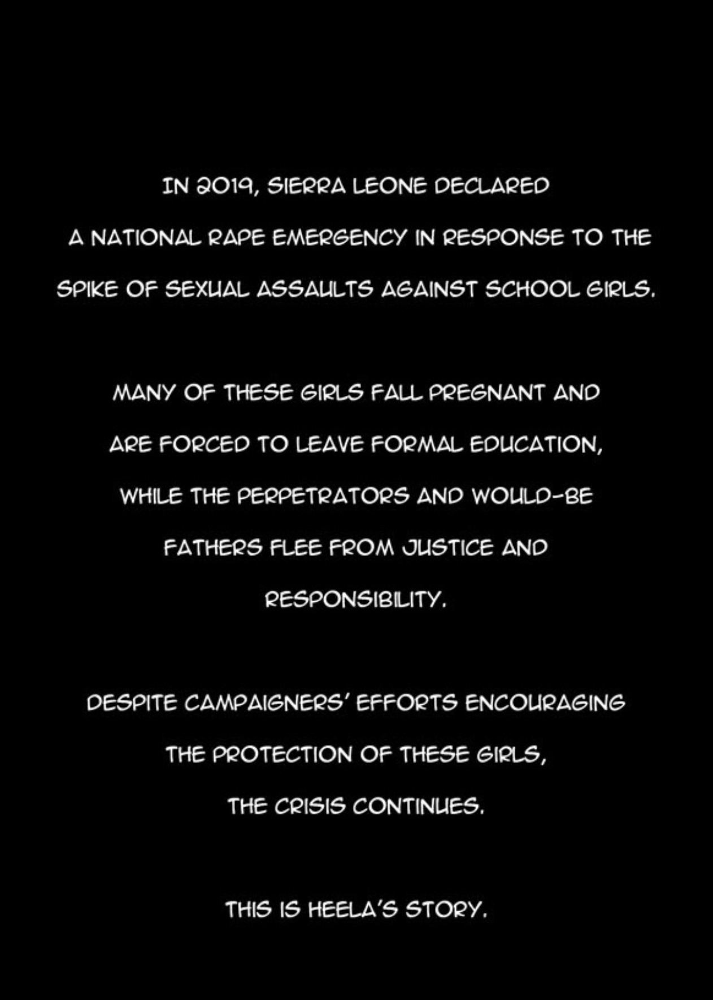
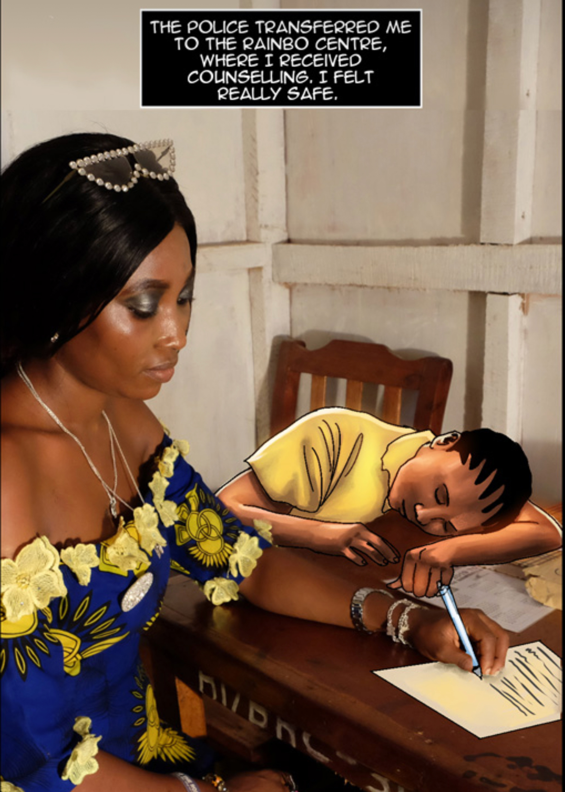

They say a picture is worth a thousand words… But, what happens when photos are not an option and words are not enough to describe an appalling reality? The graphic novel “Motherhood in Crisis” is a perfect example of how illustrations can be used as a visual medium for storytelling in a similar way to pictures. The videos of the professionals speaking near the end of each story and the introductory texts provide context for the reader to understand the cultural aspects of each story — such as the fear of hospitals due to traumatic experiences, and poverty and hunger in these Sierra Leone areas — while the comics evoke an emotional response that makes the story more impactful. The combination of these mediums makes the graphic novel not only educative but memorable and heartbreaking.
The illustrations are a crucial addition to the text because they are a visual aid that helps readers from all over the world better understand the circumstances of the Sierra Leone women. While pictures could have been used for the same effect, the stories told in this graphic novel are of such sensitive and private nature that pictures might not be available, or it would be exploitative to photograph these moments. The use of illustrations instead of pictures, is also necessary because some people, such as Heela’s family and her abuser, would most likely decline to participate in a project like this. Additionally, because of the difficult subjects the novel depicts, the illustrations and educational tone make the stories easier to digest, therefore, accessible to more people. It is noteworthy that while ‘Birth in My Village’ and ‘The Devil at My Door’ feature pictures of the protagonists at the end, ‘My Stolen Future’ and ‘My Punishment’ do not. They only feature the social workers, activists, and counselors who advocate for them. This decision seems to reflect each story’s tone and shows careful consideration to each of the women’s comfort level and how they want to tell their stories.
In the story “The School Girl ‘My Stolen Future,’” the illustrations are most likely a way of protecting Heela’s identity. Given her age when she got pregnant, and the cultural context —where women are shamed and ostracized due to ignorance around women’s health and lack of access to healthcare — represented in the novel, it makes sense that Heela’s identity should remain hidden. In this case then, Illustration is an effective tool because it helps give Heela a voice, allowing the terrible circumstances she endured to be exposed, without leaving her susceptible to scrutiny or judgement within her community. The use of photographs and illustration is particularly interesting in this story because both mediums blend seamlessly to bring awareness to the work that people like Neneh Conteh do at the Rainbo Centre. Additionally, the illustrated young girl, which represents an anonymous version of Heela, makes her a symbol for all the other young women and girls that have received or might someday need the Rainbo Centre’s services, pointing to the bigger issue of the spike of sexual assault against schoolgirls.
|
 |
 |